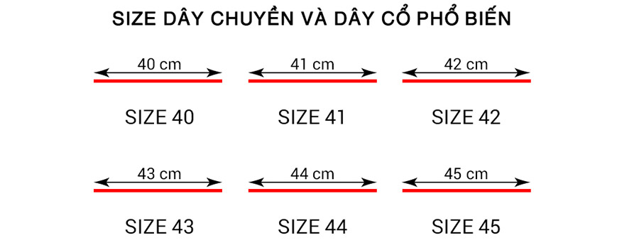
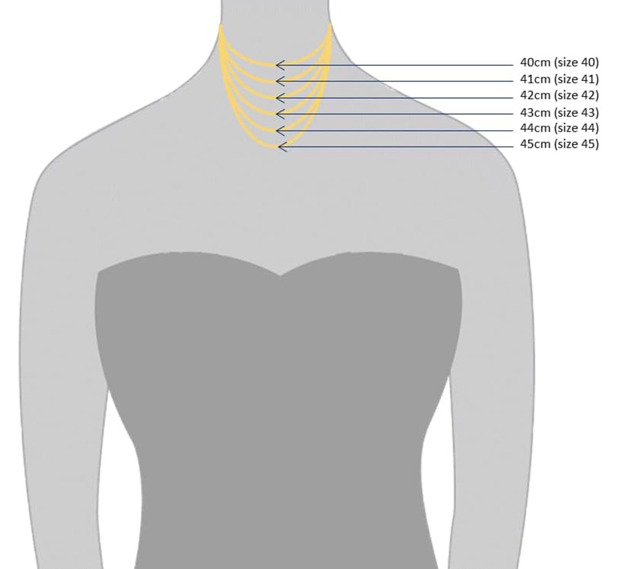

Dây chuyền hay vòng cổ là một trang sức vô cùng được yêu thích, đồng thời cũng là một gợi ý quà tặng rất ý nghĩa. Khi mua dây chuyền ngoài việc chọn mẫu dây chuyền đẹp, phù hợp với người đeo thì bạn còn phải quan tâm cả size dây chuyền. Size dây chuyền vừa vặn với người đeo mới có thể tôn lên vẻ đẹp của cả người đeo lẫn dây chuyền. Nếu bạn chưa biết xác định size dây chuyền như thế nào thì có thể tham khảo hướng dẫn sau!
Cách 1: Đo size dây chuyền bằng thước
Nếu bạn đang có sẵn một chiếc dây chuyền thì có thể sử dụng nó để đo và tìm size dây chuyền phù hợp. Cách đo thực hiện như sau:
Bước 1: Sử dụng thước đo chiều dài của sợi dây chuyền có sẵn.
Bước 2: Sau khi đã xác định được kích thước của sợi dây chuyền hãy đối chiếu với kích thước trong hình dưới đây. Kích thước đo được tính theo cm.
Bước 3: Kích thước dây chuyền của bạn là số size được ghi dưới đường thẳng. Giờ bạn chỉ cần đối chiếu với size dây chuyền tại cửa hàng và đặt mua.
Lưu ý: Size dây chuyền bạc thường là size 42 và các size chênh nhạc từ 40 – 42cm. Size dây chuyền vàng cũng tương tự, là size 42 hay 45. Đối với size dây chuyền kim cương là 42. Hoặc bạn có thể liên hệ với Cao Hùng Diamond và cung cấp kích thước sợi dây chuyền đã đo được để được tư vấn chọn size phù hợp. Trường hợp size của bạn không có thì có thể đặt làm theo size riêng tại showroom của chúng tôi.
Cách 2: Đo size dây chuyền thủ công
Tuy nhiên, nếu bạn không có sẵn dây chuyền hay vòng cổ cũng không sao, có thể áp dụng cách đo size dây chuyền thủ công cũng tương đối đơn giản và chính xác. Cụ thể:
Bước 1: Lấy một tờ giấy A4 và cắt theo chiều dọc thành hình như sợi dây và quấn quanh cổ theo vòng dây muốn đeo rồi đánh dấu điểm giao giữa 2 đầu giấy.
Bước 2: Trải mảnh giấy ra mặt phẳng và lấy thước kẻ đo độ dài từ điểm đầu tới điểm đánh dấu trên mảnh giấy.
Lưu ý: Nên thực hiện đo từ 3 – 4 lần để có được kết quả chính xác nhận.
Độ dài dây chuyền, vòng cổ thông thường hiện nay
Từ 35 – 40cm: Dây chuyền có kích thước này khi đeo sẽ khá sát với chân cổ nhưng đảm bảo không hề gây khó chịu
Từ 45cm: Khi đeo dây chuyền có kích thước này thì sợi dây sẽ chạm tới xương quai đòn. Rất nhiều người thích đeo dây chuyền kích thước này để làm nổi bật phần cổ, xương quai đòn và gương mặt
Từ 50 – 55cm: Đeo dây chuyền kích thước này thì sợi dây sẽ nằm ở dưới xương quai đòn nhưng vẫn nằm cách phần ngực khoảng vài cm. Nếu bạn muốn đeo dây chuyền có mặt đi kèm thì nên chọn kích thước này
Từ 60cm: Loại dây chuyền này tương đối dài, khi đeo sẽ chạm tới ngang ngực. Nếu bạn mặc các loại trang phục có phần ngực xẻ sâu thì có thể chọn dây chuyền kích thước này
Từ 70cm trở lên: Kích thước dây chuyền này rất dài, khi đeo sẽ chạm tới ngang rốn. Thường các mẫu dây chuyền trơn hoặc xâu chuỗi hạt mới có kích thước này. Cũng có một số mẫu dây chuyền kèm mặt dài từ 70cm trở lên nhưng không nhiều
Mượn người bạn muốn tặng quà dây chuyền của họ
Khi bạn muốn tặng dây chuyền cho ai đó nhưng không biết nên chọn kích thước nào thì có thể giả vờ mượn dây chuyền của họ rồi đo theo các cách đo size dây chuyền như hướng dẫn trên.
Nhờ người thân
Hoặc bí mật hơn là nhờ người thân của người bạn muốn tặng quà giúp bạn tìm hiểu size dây chuyền, vòng cổ của họ. Người thân của người tặng quà có thể lấy thông tin size vòng cổ của họ dễ dàng và tự nhiên hơn bằng hình thức hỏi kích thước hay nhờ thử giúp dây chuyền chẳng hạn.
Nhờ người nhận quà thử giúp
Ngoài ra, bạn cũng có thể giả vờ nói với người được tặng quà rằng mình muốn mua dây chuyền, vòng cổ cho người khác nhưng không biết kích thước. Sau đó nhờ người mình muốn tặng quà thử giúp vòng cổ.
Trên đây là hướng dẫn cách đo size trang sức – dây chuyền, vòng cổ. Nếu bạn không yên tâm về độ chuẩn xác thì có thể đến trực tuyến showroom của Cao Hùng Diamond để được nhân viên hỗ trợ đo và trực tiếp thử các mẫu dây chuyền với các size khác nhau để tìm cho mình mẫu dây chuyền có size ưng ý, phù hợp nhất.